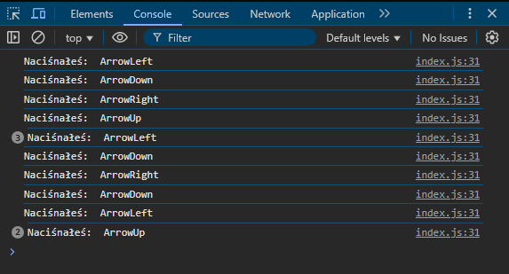

W tym poradniku nauczysz się, jak stworzyć prosty skrypt w JavaScript, który pozwoli poruszać postacią na stronie internetowej za pomocą klawiatury. Będziemy pracować na gotowej grafice gracza w formie zdjęcia, a cały projekt zbudujemy krok po kroku, wykorzystując HTML, CSS i JavaScript.
Pierwszym krokiem jest przygotowanie folderu, w którym będziesz trzymał wszystkie pliki związane z projektem. Dzięki temu będziesz mieć porządek i łatwiej będzie Ci zarządzać swoimi plikami.
Na przykład: Projekt-Postać. Aby to zrobić:
Aby łatwiej zarządzać plikami, stworzymy dodatkowy folder na zdjęcia:
Aby projekt działał, będziesz potrzebować grafiki postaci, którą będziesz poruszać na stronie.
Teraz, gdy masz już foldery i grafikę, czas na stworzenie plików do Twojego projektu
Okej, teraz przejdźmy do uzupełnienia pliku HTML i CSS w taki sposób, aby były przygotowane na dodanie skryptu JavaScript, który umożliwi poruszanie postacią. Skupimy się na ustawieniu odpowiedniej struktury HTML i stylów CSS, które zapewnią wygodne miejsce do działania skryptu.
W pliku HTML dodamy odpowiednią strukturę, aby umieścić grafikę postaci oraz zapewnić miejsce do jej ruchu.
<!DOCTYPE html>
<html lang="en">
<head>
<meta charset="UTF-8"/>
<meta name="viewport" content="width=device-width, initial-scale=1.0" />
<title>Projekt-Postać</title>
<!-- Podłączamy plik CSS | Arkusz stylów -->
<link name="stylesheet" href="style.css"/>
</head>
<body>
<!-- Element(gracz), którym będziemy się poruszać -->
<div id="player"></div>
<!-- Podłączenie skryptu JavaScript do pliku HTML -->
<script id="index.js"></script>
</body>
</html>
W pliku CSS musimy przygotować odpowiedni wygląd strony, a także ustawić obszar, w którym będzie się poruszać postać.
/* Resetowanie marginesów i paddingu */
body {
margin: 0;
padding: 0;
/* Ustawienie tła na obrazek, który będzie zawsze w centrum i przyklejony do okna */
height: 100svh;
width: 100svw;
background: url("./images/background.png") no-repeat center center fixed;
background-size: cover; /* Obrazek wypełnia tło */
}
/* Styl postaci */
#player {
/* Ustawienie tła postaci */
background-image: url("./images/playerDown.png");
/* Pozycjonowanie postaci na środku ekranu */
position: absolute;
left: 50%;
top: 50%;
transform: translate(-50%, -50%);
/* Rozmiar postaci */
width: 48px;
height: 68px;
}
Skoro mamy już wystylizowaną stronę oraz umieszczoną postać na ekranie, możemy zacząć dodawać interaktywność do naszej strony.
console.log("Skrypt działa!");
Jak uruchomić konsolę w przeglądarce? W ten sposób:

window.addEventListener("keydown", function(event) {
// Kod który się wykona po wykryciu wydarzenia
});
Nazwą wydarzenia które będziemy nasłuchiwać jest "keydown", musimy również dopisać do funkcji parametr którym jest event. Event zawiera wszystkie informacje o zarejestrowanym wydarzeniu. Wyświetlimy teraz w konsoli naciśnięty przycisk.
window.addEventListener("keydown", function(event) {
// Wyświetlenie w konsoli naciśniętego klawisza
console.log("Nacisnąłeś: " + event.key);
});
Wyświetlanie się w konsoli przycisku poruszania
const inputKeys = {
ArrowUp: false,
ArrowRight: false,
ArrowDown: false,
ArrowLeft: false,
};
Obiekt z przyciskami powinien znajdować się nad nasłuchiwaniem.
window.addEventListener("keydown", (event) => {
if (inputKeys.hasOwnProperty(event.key)) {
console.log("Nacisnąłeś: " + event.key);
}
});
window.addEventListener("keyup", (event) => {
if (inputKeys.hasOwnProperty(event.key)) {
console.log("Puściłeś: " + event.key);
}
});
window.addEventListener("keydown", (event) => {
if (inputKeys.hasOwnProperty(event.key)) {
console.log("Nacisnąłeś: " + event.key);
inputKeys[event.key] = true;
}
});
window.addEventListener("keyup", (event) => {
if (inputKeys.hasOwnProperty(event.key)) {
console.log("Puściłeś: " + event.key);
inputKeys[event.key] = false;
}
});
const playerImage = document.querySelector("player");
const playerMoveSpeed = 2;
const handlePlayerMovement = () => {
if (inputKeys.ArrowUp) playerImage.style.top = `${playerImage.offsetTop - playerMoveSpeed}px`;
if (inputKeys.ArrowRight) playerImage.style.left = `${playerImage.offsetLeft + playerMoveSpeed}px`;
if (inputKeys.ArrowDown) playerImage.style.top = `${playerImage.offsetTop + playerMoveSpeed}px`;
if (inputKeys.ArrowLeft) playerImage.style.left = `${playerImage.offsetLeft - playerMoveSpeed}px`;
};
window.addEventListener("keydown", (event) => {
if (inputKeys.hasOwnProperty(event.key)) {
// Reszta kodu
handlePlayerMovement();
}
});
Możemy teraz poruszyć postacią na ekranie poprzez ciągłe klikanie.
const gameLoop = () => {
handlePlayerMovement();
requestAnimationFrame(gameLoop);
}
let isPlayerMoving = false;
let clickedButtons = [];
const playerSprites = [
"./images/playerUp.png",
"./images/playerRight.png",
"./images/playerDown.png",
"./images/playerLeft.png",
];
window.addEventListener("keydown", (event) => {
if (clickedButtons.includes(event.key)) return;
if (inputKeys.hasOwnProperty(event.key)) {
inputKeys[event.key] = true;
clickedButtons.push(event.key);
isPlayerMoving = true;
}
});
window.addEventListener("keyup", (event) => {
if (inputKeys.hasOwnProperty(event.key)) {
inputKeys[event.key] = false;
clickedButtons = clickedButtons.filter((key) => key !== event.key);
if (clickedButtons.length === 0) {
isPlayerMoving = false;
}
}
});
let image = playerSprites[2];
const updatePlayerDirection = () => {
let lastClickedButton = clickedButtons[clickedButtons.length - 1];
let image = playerSprites[2];
switch (lastClickedButton) {
case "ArrowUp":
image = playerSprites[0];
break;
case "ArrowRight":
image = playerSprites[1];
break;
case "ArrowDown":
image = playerSprites[2];
break;
case "ArrowLeft":
image = playerSprites[3];
break;
default:
break;
}
playerImage.style.backgroundImage = `url(${image})`;
};
const handlePlayerMovement = () => {
// Reszta kodu odpowiedzialna za ruch...
if (isPlayerMoving) {
updatePlayerDirection();
}
};
W przyszłości możesz dodać więcej funkcji, takich jak animacje, kolizje z przeszkodami czy interakcje z innymi obiektami w grze.